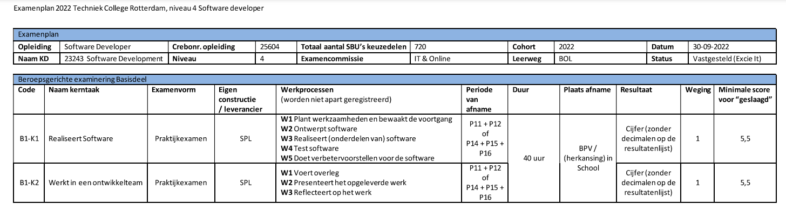
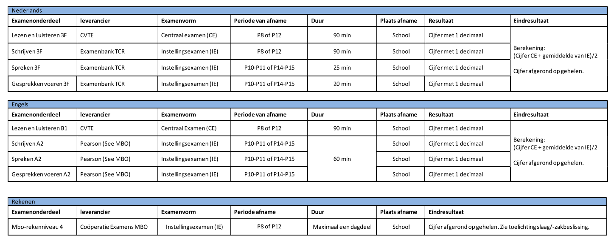

Hier staat in het kort toegelicht hoe het examenplan van 2022-2023 in elkaar zit. Aan het einde van leerjaar 3 krijg je examens over het beroep (ontwerpen/programmeren). Dit examen doe je op je stage. Hiervoor moet je minstens een 5.5 halen om te slagen.
Daarbij moeten wij als Software Developer & Creative Media Technology student vier keuzevakken doen. Omdat wij een specifieke opleiding doen, hebben wij niet veel keuze en moeten wij de volgende vier keuzevakken doen. Front end development, Interaction design, Mobile app design en Grafisch ontwerp voor web development.
Ook moeten wij de drie kernvakken Nederlands, Engels en Rekenen behalen. Voor Nederlands en Engels heb je vier verschillende onderdelen. Lezen & luisteren, Schrijven, Spreken en Gesprek voeren. Dit is allemaal op 3F niveau. Het werkt als volgt. Van Schrijven, Spreken en Gesprek voeren wordt een gemiddelde gepakt. Van het onderdeel Lezen & luisteren en het gemiddelde van Schrijven, Spreken en Gesprek voeren wordt er een nieuw gemiddelde gepakt. Dit is het eindcijfer wat telt. Voor Rekenen is er gewoon een enkel examen dat telt.
Ook moeten we voor de vakken Loopbaan en Burgerschap voldoende hebben.
Tot slot moeten we onze BPV (stage) goed hebben afgerond, zodat het goed gekeurd kan worden. Hiervoor moet je een verklaring hebben gekregen dat het ‘voldoende’ is afgesloten.